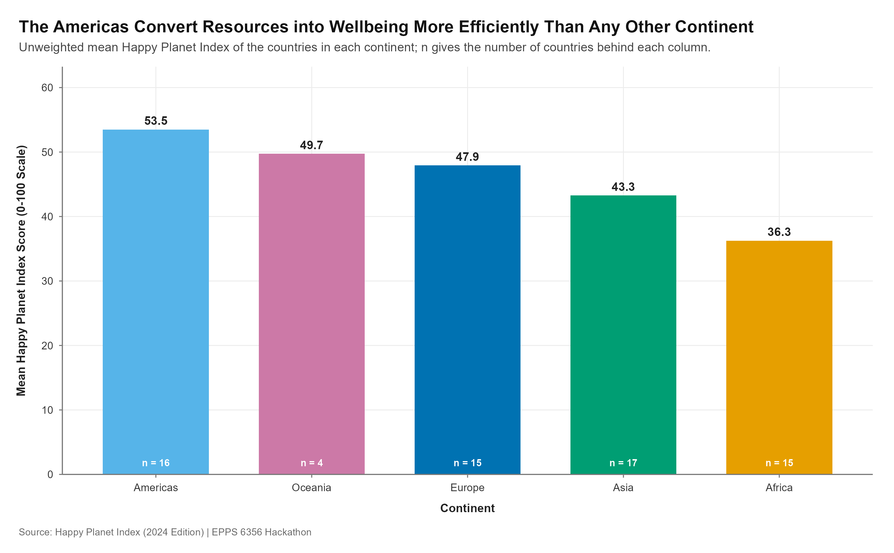

df_chart4 <- hpi_clean |>
group_by(continent) |>
summarise(mean_hpi = mean(hpi, na.rm = TRUE),
n = dplyr::n(),
.groups = "drop") |>
mutate(continent_ordered = fct_reorder(continent, mean_hpi, .desc = TRUE))
p4 <- ggplot(df_chart4,
aes(x = continent_ordered, y = mean_hpi, fill = continent)) +
geom_col(width = 0.68, show.legend = FALSE) +
geom_text(aes(label = sprintf("%.1f", mean_hpi)),
vjust = -0.55, size = 3.6, fontface = "bold") +
geom_text(aes(y = 1.8, label = paste0("n = ", n)),
size = 2.9, colour = "#FFFFFF", fontface = "bold") +
scale_fill_continent() +
scale_y_continuous(name = "Mean Happy Planet Index Score (0-100 Scale)",
limits = c(0, 62), breaks = seq(0, 60, by = 10),
expand = expansion(mult = c(0, 0.02))) +
theme_hackathon(legend_pos = "none")EPPS 6356 Assignment 4: Chart Hackathon (Team)
Assignment 4 was a team deliverable. Our group’s portfolio site holds the finished product; this page records the part I built and how it was made.
- Team repository: nedretsencavus/portfolio
- My contribution: Chart 4, the shared theme file
R/theme.R, and the reproducibility paperwork (README.md,prompts.md,sessionInfo.txt) - Data: Happy Planet Index, 2024 edition (153 countries)
Chart 4: one variable across a few items
Abela’s Chart Thought-Starter sends a comparison of one variable among a few items to a column chart, so that is what the brief called for. The variable is the Happy Planet Index; the items are the five continents.

The code
The full script is assignments/Chart4.R in the team repository.
Three decisions behind the chart
The bars start at zero and the axis says so. A column encodes a quantity by length, so a truncated baseline makes the lengths lie. limits = c(0, 62) with expand = expansion(mult = c(0, 0.02)) pins the columns to the axis line instead of floating them above it.
The columns are sorted, not alphabetical. Alphabetical order would be a second, irrelevant variable competing with the one the reader came for. Sorting by the mean turns the ranking into something read at a glance, which is the cheapest comparison in Cleveland and McGill’s hierarchy — position along a common scale.
The chart states its own n. A continental mean hides how many countries it averages: Oceania’s mean rests on a handful of countries, Africa’s on dozens. The white n = label inside each column puts that caveat where the number is, rather than in a footnote nobody reads.
Beyond the chart
Chart1.R and Chart3.R both called source("R/theme.R"), but that file was not in the repository — the palette and theme lived only inside a setup chunk in the Quarto document, so the scripts could not be run on their own. I extracted the Okabe–Ito palette, the three scale_* helpers and theme_hackathon() into R/theme.R, which made every chart script reproducible from a clean clone and gave Chart 4 the same visual language as the other three.
I also wrote the team README.md (reproduction steps, package list, repo layout, data source) and prompts.md, the AI disclosure covering my prompts for Chart 4, and generated sessionInfo.txt.
AI use
My AI use for this assignment is disclosed in the team repository’s prompts.md, so that the disclosure sits next to the code it describes. A copy of my section of it is on this site: Assignment 4: AI Use Log.
Commits
My work is visible in the team repository’s history:
| Commit | What it added |
|---|---|
2587b84 |
Chart 4 and the extracted R/theme.R |
07f074f |
Rotated the Chart 4 y-axis title to match Chart 1 |
bc0e230 |
README.md, prompts.md, sessionInfo.txt |